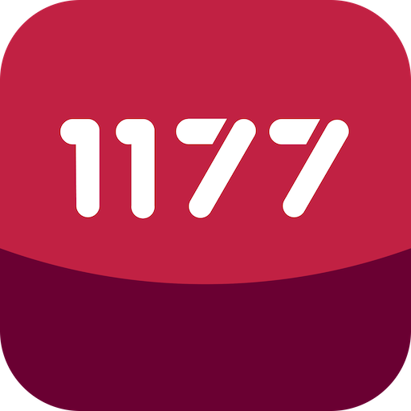
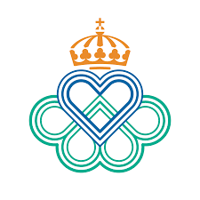
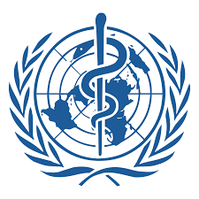

Källor
Informationen på denna webbplats är baserad på följande källor:

1177 Vårdguiden
Folkhälsomyndigheten
WHO (World Health Organization)Dessa källor bedöms som trovärdiga eftersom de är myndigheter eller internationella organisationer som arbetar med hälsa och forskning. Informationen är granskad och uppdateras regelbundet. Jag har även jämfört flera källor för att säkerställa att innehållet är korrekt och relevant.
Bilder
Bilder är hämtade från fria bildbanker som Unsplash och Pexels.